Meesterproef: CMD Nexus
Mijn persoonlijke leerdoelen voor het laatste project
Mijn persoonlijke leerdoelen voor het laatste project
Ik heb 2 docenten (Laura B. & Miranda E.) diepgaand geinterviewd met Lisa. We hebben daardoor een mooi beeld gekregen van de verschillende wensen en doeleindes wat betreft de CMD case en kunnen hierdoor de flows binnen ons platoform beter ontwerpen.
Ik heb een gesprek met Vasilis gehad en tot de conclusie gekomen dat we/ik meer wil gaan designen in code. Zodat we geen leftover product hebben (figma design), geen loze tijd hebben verspild én nog belangrijker.. het echt meteen in gebruik kunnen nemen. Verder heb ik de selection component ge-designed in code - ook geinspireerd op mijn leerdoel van microinteracties. Ik heb een transition gemaakt en de ViewTransition API gebruikt om een active state door de browser te laten berekenen. Super clean en super tof naar mijn idee. https://codepen.io/Mike-de-Vries/pen/pvvYzZb
Blij met de progressie van de week. Veel insights kunnen krijgen van de doelgroep(en). Blij met de selection component waar de view transition heel subtiel helpt om de beweging clean te laten verlopen, want de tekst wordt netjes vervangen bij selectie én de background selection beweegt ook nice mee. Door de interviews ben ik dichterbij mijn leerdoel doelgericht ontwerpen. De selection code is prettig voor mijn leerdoel van herbruikbare code. De ViewTransition past zich aan naar de grootte van de component.. mochten er meerdere elementen worden toegevoegd als selections, dan kan dat.
Ik heb de voorlopig laatste designs gefinisht met Lisa. We hebben ontzettend veel ontwerpen gemaakt en getest. En ik heb een basis-cursus gevolgd van Sveltekit . Zodat het enigszins mogelijk is voor mij om code te schrijven.
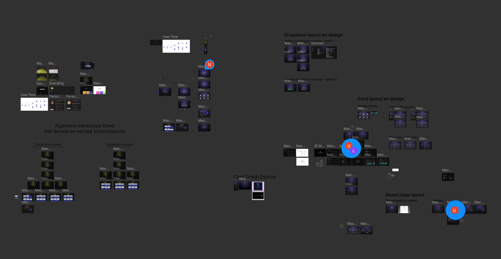En ik heb een schermflow in elkaar gezet om ons een beter beeld te geven over de interactie. Ronald vind de conversational interface namelijk echt het aller belangrijktse aan dit project.
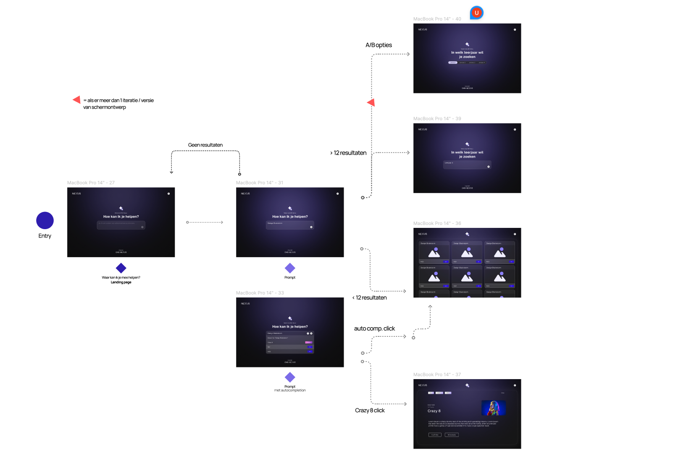 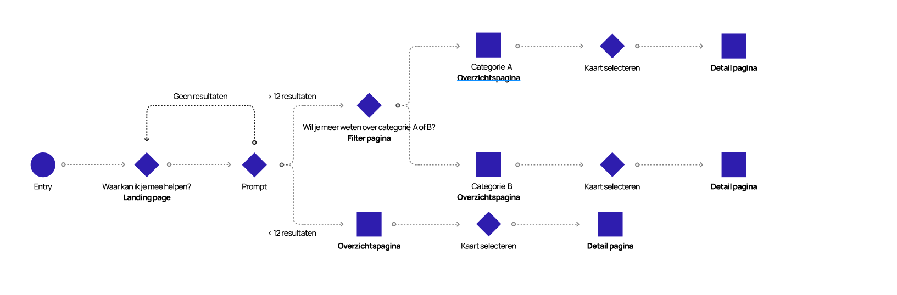Hier heb ik wat components gemaakt. Met doel op herbruikbare code. Kleur in component bijv. currentColor zodat hij de css pakt van het bovenliggende element.
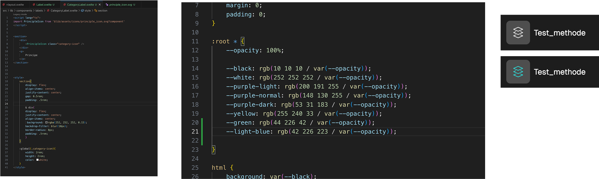Atomic design brianstorm sessie gehouden. Ik heb tijdens onze meeting om 1600 na de les al onze componenten atomisch gevisualiseerd. Dit hoort mede bij mijn leerdoel om georganiseerd te werken. We brainstormde over alles wat we maken moesten. Zo gingen onze neuzen de zelfde kant op staan en wisten we van elkaar, na verdelinge van taken, wat we aan elkaar hadden en hoe we er voor stonden.
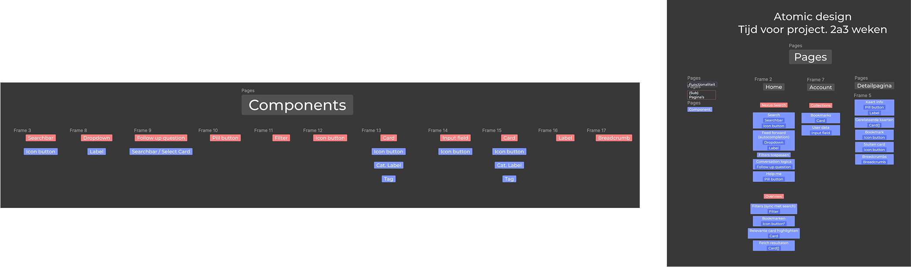 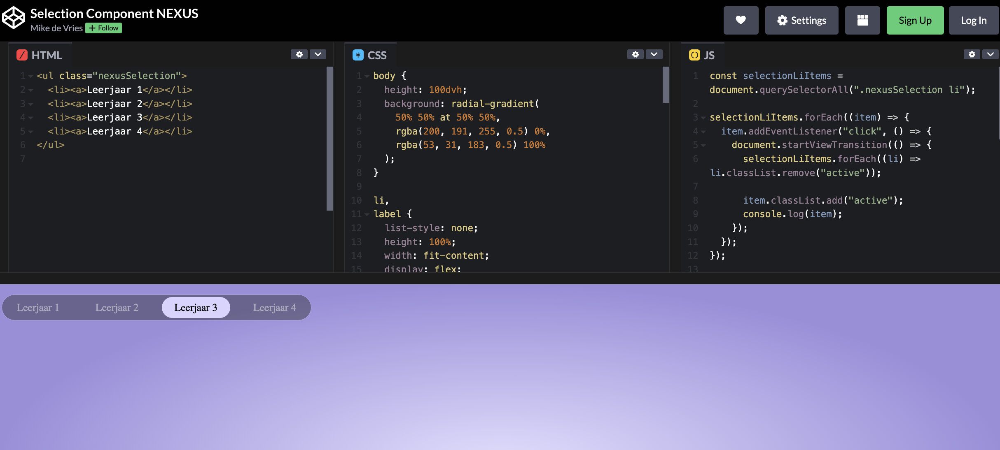Ik ben ontzettend blij met de progressie van de week. Veel insights kunnen krijgen van de doelgroep(en). Trots op m'n selection component waar de view transition heel subtiel en clean werkt, want de tekst wordt netjes vervangen bij selectie én de background selection beweegt ook nice mee.
Lisa heeft een nette structuur opgemaakt in svelte. We hebben vastgesteld dat we elkaars code reviewen om zo goed samen te kunnen werken en zeker te zijn van valide, robuste en dynamische code. Ik heb er wat dynamische properties aan toegevoegd zodat we het element kunnen gebruiken met data én zodat we er variants van kunnen maken.
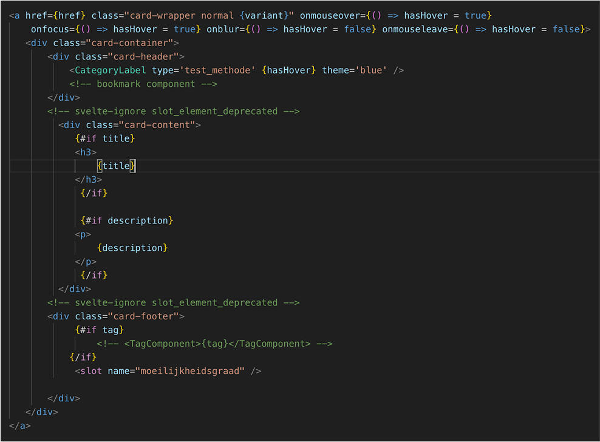Ik heb hier een kort maar net herbruikbaar componentje gemaakt. Ik sluit een atotmisch componentje in. Maak hem _blank klikbaar en geef aan dat de 'p' in een andere pagina waarde kan krijgen door op de 'title' te targeten. De slot geef aan dat er nog een ander component dynamisch ingeladen zal worden vanaf een andere pagina. Dit soort dingen zijn ontzettend wennen en waren niet het makkelijkst, om meteen te begrijpen.
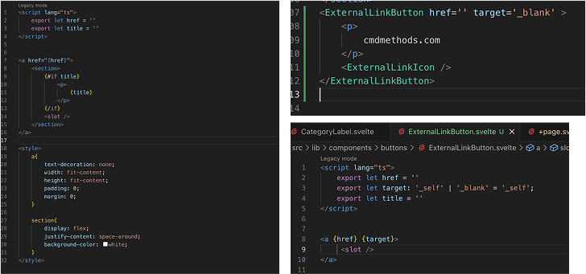Het was een hobbelige week. Als team wel stappen gemaakt, maar we itereren toch wel veel op ons design. Mede door de verschillende meningen van ons en mensen om ons heen (Vasilis, Ronald, klasgenoten, etc.) Daarnaast, is het door svletekit voor mezelf vrij ingewikkeld om iets simpels maar juist op te zetten. Het lukt wél, door hulp van teamgenoten, maar het gaat toch ff wat stroever dan gehoopt. Het werkt wél heel prettig daarentegen.
Ik heb voor het eerst gewerkt met gsap.timeline. Mijn doel was om een herbruikbare en eenvoudig aanpasbare animatie van ons logo te maken. Uit mijn onderzoek bleek dat timeline hier uitstekend geschikt voor is. Je kunt, vergelijkbaar met keyframes, specifieke gebeurtenissen op een exact moment laten plaatsvinden. Dit werkt net wat prettiger en flexibeler dan CSS-keyframes. In de timeline heb ik een feedback-animatie ontwikkeld waarin het logo visueel communiceert wat er op de achtergrond gebeurt. Tijdens het typen in de zoekbalk laat het logo zien dat het ‘luistert’ en aan het ‘nadenken’ is. Zodra de verwerking is voltooid, krijgt het logo een “finished”-staat, die dit ook uitstraalt. Daarna keert het logo terug naar zijn standaardstatus.
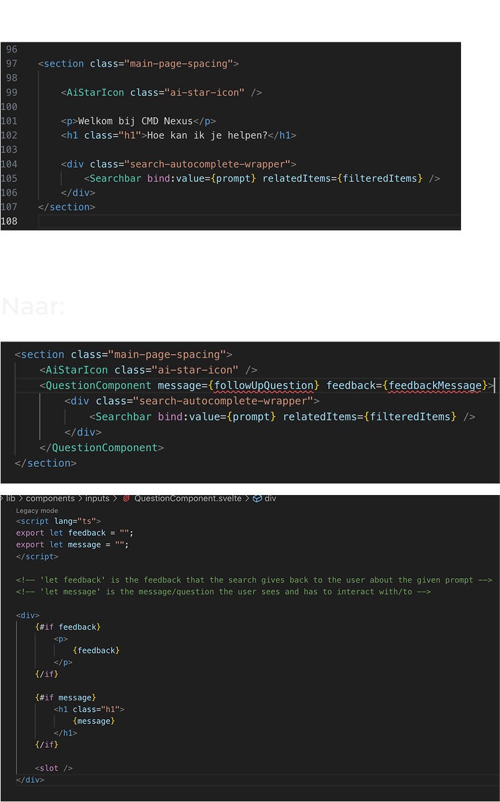Ik heb het bovenste, bestaande element van een teamgenoot opnieuw opgebouwd. Niet om het ‘beter’ te maken dan wat zij kunnen, maar om het geschikt te maken voor gebruik met data – specifiek voor onze follow-up question-functionaliteit. Ik heb dus een statisch element omgezet in een dynamisch element dat gevoed wordt met een followUpQuestion-bericht en een feedbackMessage. Hiervoor was de juiste Svelte-structuur nodig in het onderliggende component, met onder andere #if feedback en message, en het gebruik van slot. Ik heb er 2 comments bij geplaatst zodat de volgende developer weet wat iets is., want de termen feedback en message lijken nogal op elkaar natuurlijk.
Na heel wat versies is mijn slider component eindelijk af en herbruikbaar in te zetten op zowel de toggle layout slider button als de question input slider.
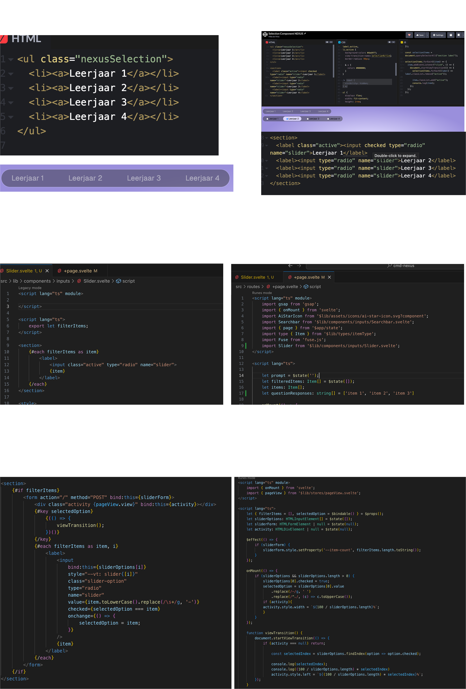 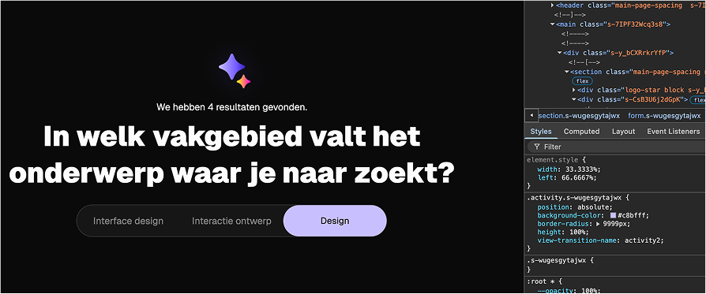De uiteindelijke final slider heeft wat extra's tov de voorgaande versies. Nu wordt er door mijn functie berekend hoeveel items er in zitten zodat hij weet hoe lang hij moet worden en waar de selectedHighlight moet komen te staan. Én het is een form met label en input geworden. We moeten namelijk de data post'en én door label en input te gebruiken is het hele element klikbaar (zo geen problemen meer zoals bij de radio button versie van eerder). Ik had nog geprobeerd sveltekit transitions te gebruiken zoals fly, fade, etc. maar dat werkt niet voor mijn specifieke scenario (werkt enkel bij het toevoegen van nieuwe elementen).
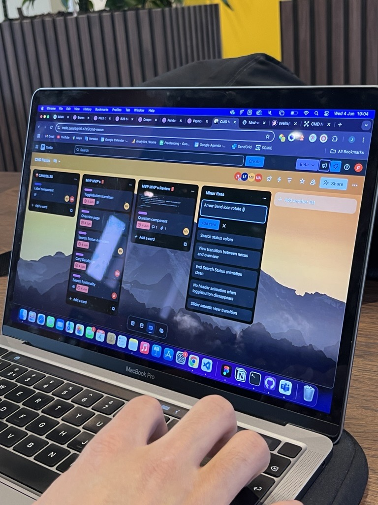We hebben een hele goede Trello-sessie gehad. Ik heb duidelijk gemaakt wat ik vóór woensdag af wil hebben, zodat we samen een werkend product hebben waar we tevreden over kunnen zijn qua functionaliteit. Daarna kunnen we gave effecten en interacties toevoegen.
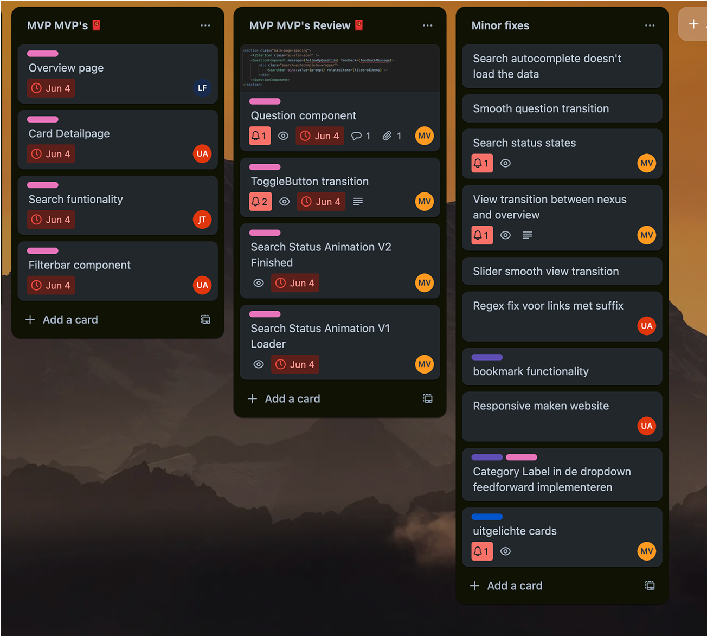Dit was een mooie week. Heel veel stappen gemaakt. We hebben lekker onze planning kunnen volgen. Elkaar kunnen helpen en bijspringen waar nodig. Ik kan mijn weg binnen sveltekit al een beetje vinden en krijg de benodigde hulp van mijn teamgenoten waar nodig. Ik heb met declan gezeten deze week om mijn slider berekening optimaal te krijgen én hij heeft meegekeken naar manier om dit component op te bouwen. Maar hij was het eens met de huidige aanpak dus dit is ook het resultaat geworden.
Week 5 bestond nog uit een paar laatste fixes uit de trello 'minor fixes' lijst. We hebben dinsdag nog een laatste meeting gehad met Ronald. Hier heb ik nog een laatste paar vragne kunnen stellen maar heb ook duidelijk gemaakt waarom we bepaalde ontwerpkeuzes hebben gemaakt (dit was echt nodig, want hij dacht vaak dat wij bepaalde keuzes gedachteloos uitvoerden & hij veranderd elke week van mening). Later die week de eindpresentatie en expositie gehad. Het was nog een drukke paar dagen, maar het verliep wel goed.
Ik ben ontzettend trots op wat ik – en wat wij samen – hebben neergezet. Waar twee weken aan onderzoek en ontwerp echt nodig waren bij deze uitdagende en vaag omschreven opdracht, vormde dat uiteindelijk wel een mooie basis voor een goed doordacht platform met een unieke conversational interface.
Het is een platform geworden met meerdere flows en doelgroepen. Of je nu nieuw bent op CMD of al een ervaren gebruiker: we hebben ons best gedaan om beide een prettige ervaring te bieden. Het eindproduct is visueel gelikt, bevat micro-interacties en biedt een prettige, vloeiende conversational flow.
Ik ben tevreden met mijn componenten in SvelteKit. Ze zijn kort en bondig geschreven, en dynamisch inzetbaar. Mijn team was fijn om mee samen te werken – iedereen heeft veel bijgedragen en goede input geleverd tijdens meetings. We stonden altijd klaar om elkaar te helpen of om extra taken op te pakken uit de planning.
Het was een druk en soms ‘chaotisch’ project, maar we hebben er het beste van gemaakt. En ik durf wel te zeggen: we hebben het knap gedaan.
Als ik terugkijk naar mijn leerdoelen, heb ik daar echt hard aan gewerkt. Ik heb robuuste componenten gebouwd die modulair, consistent en responsive zijn. Dankzij die kwaliteit had ik later in het project tijd om me te richten op interactieve elementen. Ik heb sliders en animaties/transities toegevoegd om de gebruiker een prettige, vloeiende ervaring te geven. Deze interacties zijn doelgericht opgezet.
Daarnaast heb ik gebruikgemaakt van variabelen (die niet altijd zichtbaar zijn in screenshots, maar wel degelijk in het eindproduct zitten) en heb ik comments geschreven. Daar had ik er eigenlijk meer van mogen maken, maar binnen ons team van vier stonden comments soms in de weg – we wilden de code clean houden.
Wél heb ik consistente en nette commits geschreven volgens onze standaard: branches met feature/... en commits in de vorm van feat: ... subject ... description.
Mijn laatste leerdoel is ook goed gelukt: ik heb doordacht ontworpen op basis van interviews, tests en feedback. Ik heb componenten herbruikbaar gemaakt, het proces bijgehouden en uitgewerkt met tooling, en ook code van anderen gereviewd. Dat maakte de code niet altijd beter, maar ik heb er veel van geleerd – en de anderen soms ook.